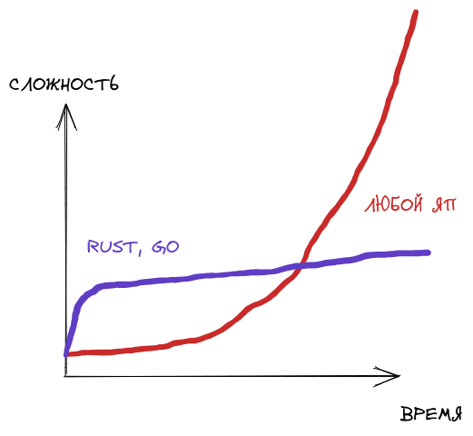

Введение
Проблема
Нужен удобный инструмент, генерирующий из абстрактного описания FSM (Finite State Machine aka конечный автомат) готовый Verilog код.
Пример (Источник)
Пользователю необходимо каким-то образом задать данный конечный автомат и после этого выполнить программу.
Имплементация на verilog в Moore и Mealy-styles
// edgeDetector.v
// Moore and Mealy Implementation
module edgeDetector
(
input wire clk, reset,
input wire level,
output reg Mealy_tick, Moore_tick
);
localparam // 2 states are required for Mealy
zeroMealy = 1'b0,
oneMealy = 1'b1;
localparam [1:0] // 3 states are required for Moore
zeroMoore = 2'b00,
edgeMoore = 2'b01,
oneMoore = 2'b10;
reg stateMealy_reg, stateMealy_next;
reg[1:0] stateMoore_reg, stateMoore_next;
always @(posedge clk, posedge reset)
begin
if(reset) // go to state zero if rese
begin
stateMealy_reg <= zeroMealy;
stateMoore_reg <= zeroMoore;
end
else // otherwise update the states
begin
stateMealy_reg <= stateMealy_next;
stateMoore_reg <= stateMoore_next;
end
end
// Mealy Design
always @(stateMealy_reg, level)
begin
// store current state as next
stateMealy_next = stateMealy_reg; // required: when no case statement is satisfied
Mealy_tick = 1'b0; // set tick to zero (so that 'tick = 1' is available for 1 cycle only)
case(stateMealy_reg)
zeroMealy: // set 'tick = 1' if state = zero and level = '1'
if(level)
begin // if level is 1, then go to state one,
stateMealy_next = oneMealy; // otherwise remain in same state.
Mealy_tick = 1'b1;
end
oneMealy:
if(~level) // if level is 0, then go to zero state,
stateMealy_next = zeroMealy; // otherwise remain in one state.
endcase
end
// Moore Design
always @(stateMoore_reg, level)
begin
// store current state as next
stateMoore_next = stateMoore_reg; // required: when no case statement is satisfied
Moore_tick = 1'b0; // set tick to zero (so that 'tick = 1' is available for 1 cycle only)
case(stateMoore_reg)
zeroMoore: // if state is zero,
if(level) // and level is 1
stateMoore_next = edgeMoore; // then go to state edge.
edgeMoore:
begin
Moore_tick = 1'b1; // set the tick to 1.
if(level) // if level is 1,
stateMoore_next = oneMoore; // go to state one,
else
stateMoore_next = zeroMoore; // else go to state zero.
end
oneMoore:
if(~level) // if level is 0,
stateMoore_next = zeroMoore; // then go to state zero.
endcase
end
endmodule
Работа программы
- Задание FSM
- Выполнение алгоритма, приводящего данный FSM в Module, являющемся внутренним представлением конструкции "module" из Verilog
- Выполнение функции export_verilog()-> String, которая выдает на выход готовый Verilog-код
Архитектура

1 шаг
На первом шаге строка, записанная в языке FSM_lang парсится во
внутреннее представление FSM (Finite State Machine) посредством вызова
функции FSM_parse.
#![allow(unused)] fn main() { let str: &str; let result = FSM_parse(str)?; }
2 шаг
Из внутреннего представления FSM (Finite State Machine) посредством вызова
функции fsm_to_verilog_module
#![allow(unused)] fn main() { let str: &str; let resultFSM = FSM_parse(str)?; let resultModule = fsm_to_verilog_module(resultFSM)?; }
3 шаг
Из внутреннего представления Verilog-модуля, получаем конечную строку с Verilog-кодом.
#![allow(unused)] fn main() { let str: &str; let resultFSM = FSM_parse(str)?; let resultModule = fsm_to_verilog_module(resultFSM)?; let resultString = resultModule.export_verilog(); }
Язык FSM
Зачем?
Несмотря на изящество решений, использующих конечные автоматы в Verilog, нельзя не отметить их громоздкость и, порой, избыточность в плане написания кода, поэтому необходимо удобное и более лаконичное средство описания Verilog-кода как конечного автомата.
Почему Rust? Почему Nom?
Причины использовать Rust:
- Возможность в перспективе использовать макросы, которые смогут полностью парсить предложения at compile time.
- Более сглаженная кривая роста сложности программ (дискуссионный вопрос) 
Причины НЕ использовать Rust:
- Не так много библиотек.
- Что еще важнее - не так много генераторов парсеров. Bison и antlr сюда не завезли
А какой парсер собственно говоря нам нужен?
Рассмотрим имеющиеся варианты написания парсера для решения данной задачи:
- Полностью cамописный
- Генератор парсеров
- Самописный с ипользованием комбинаторных библиотек.
1-ый вариант плох ощутимо высокими издержками времени.
2-ой вариант плох тем, что не будет комфортных сообщений об ошибках + при необходимости исправить обход/добавить какие-то дополнительные действия в правила, разработчик будет ограничен в тех точках расширения, которые предоставляет конкретная библиотека
3-ий вариант все так же имеет высокие издержки времени, но они гораздо меньше чем в первом варианте, но при сохранении всех достоинств первого варианта.
В связи с вышеперечисленным, было принято решение использовать 3-ий подход и библиотеку NOM для его реализации.
// Архитектура
// Что транслятору можно подать на вход и как он реагирует на ошибки
Описание языка
Язык описывает FSM ( Finite State Machine ) с добавленными конструкциями, благодаря чему может компилироваться в конечном счете в Verilog
Три главных конструкции в fsm_lang
- Состояния (States)
- Входы и выходы (Inputs and Outputs)
- Переходы и действия (Transitions and Actions)
Описание элементов языка:
Состояния (States)
Состояния: Состояние определяется ключевым словом state, за которым следует уникальное имя состояния и двоеточие.
Пример:
state StateA:
state StateB:
Входы и выходы (Inputs and Outputs)
Входы и выходы: Входы и выходы определяются ключевыми словами input и output, за которыми следует уникальное имя входа или выхода и количество бит, заключенное в круглые скобки.
Пример:
input(1) Input1;
output(1) Output1;
Переходы и действия (Transitions and Actions)
Переходы и действия: Переходы и действия определяются внутри блока состояния. Каждый переход начинается с ключевого слова on, за которым следует условие перехода, стрелка "->", имя целевого состояния и действие при переходе в фигурных скобках.
Пример:
on Input1 == 1 -> StateB {Output1 = 1};
Пример
state StateA:
input(1) Input1;
output(1) Output1;
on Input1 == 1 -> StateB {Output1 = 1};
on Input1 == 0 -> StateC {Output1 = 0};
state StateB:
input(2) Input2;
output(2) Output2;
on Input2 == 2'b10 -> StateC {Output2 = 2'b01};
state StateC:
input(2) Input2;
output(2) Output2;
on Input2 == 2'b01 -> StateA {Output2 = 2'b10};
Грамматика FSM_lang
Примерный вариант грамматики:
<FSM> ::= {<state_declaration>}+
<state_declaration> ::= "state" <state_name> ":" {<input_declaration> | <output_declaration> | <transition_action>}*
<state_name> ::= <identifier>
<input_declaration> ::= "input" "(" <bit_width> ")" <input_name> ";"
<output_declaration> ::= "output" "(" <bit_width> ")" <output_name> ";"
<transition_action> ::= "on" <condition> "->" <state_name> <action> ";"
<condition> ::= <input_name> <comparison_operator> <value>
<action> ::= "{" <output_name> <assignment_operator> <value> "}"
<identifier> ::= [a-zA-Z_][a-zA-Z0-9_]*
<input_name> ::= <identifier>
<output_name> ::= <identifier>
<bit_width> ::= [1-9][0-9]*
<comparison_operator> ::= "==" | "!=" | "<" | "<=" | ">" | ">="
<assignment_operator> ::= "="
<value> ::= <binary_value> | <decimal_value>
<binary_value> ::= [0-1]+ "b"[0-1]+
<decimal_value> ::= [0-9]+